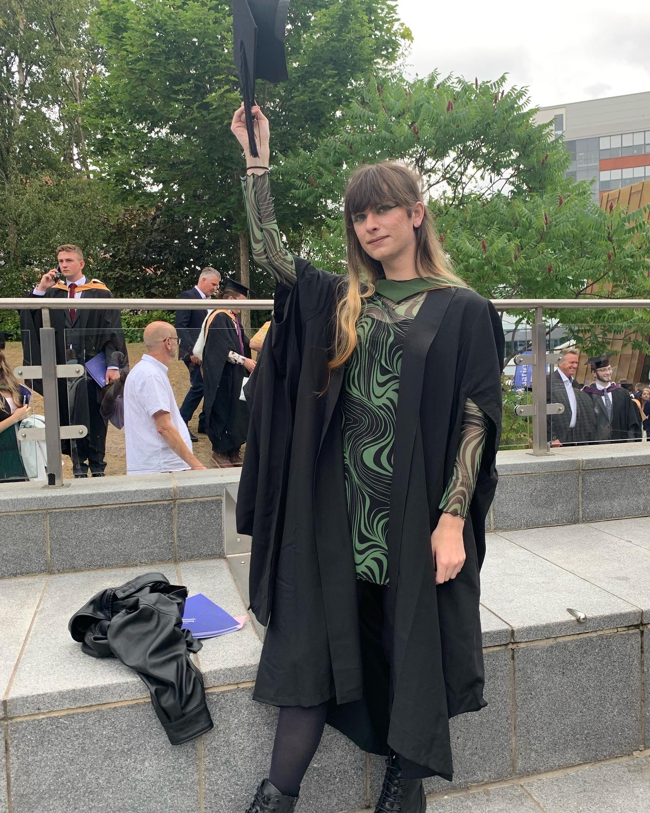

Welcome to my website! I'm Jessica Kent and my pronouns are she/they. Currently I am a PhD student at the University of Sheffield, working in elastic wave propagation and ultrasonic sensing under Dr Art Gower.
From a young age I have maintained a fascination with mathematics and the ways it can be used to make the world a better place.

Jessica J. Kent (she/they)
jessicajkent1998@gmail.com
Dynamics Research Group
Department of Mechanical Engineering
University of Sheffield
Publications
Presentations- IEEE Ultrasonics Presentation Jessica J. Kent, Matheus de C. Loures, Art Gower
- Elasticty Day 2023 Jessica J. Kent, Art Gower
- BAMC 2023 Jessica J. Kent, Art Gower
- A tomographic method to predict forces in a rolling element bearings (ISMA 2024) Jessica J. Kent, Matheus de C. Loures, Art Gower